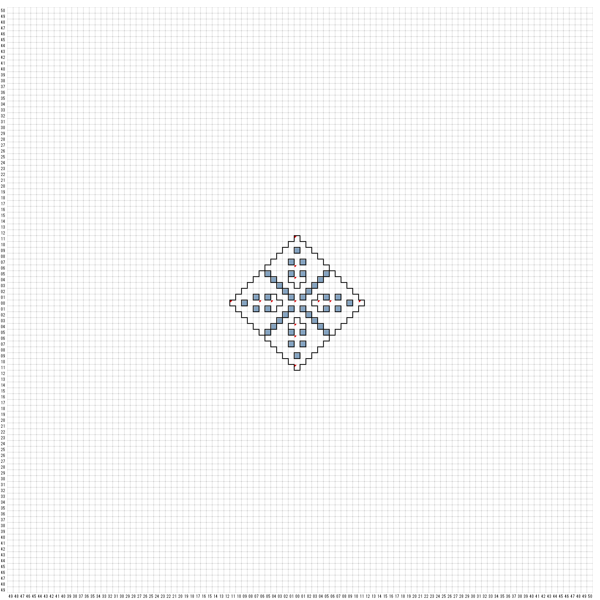

【 西：11，北：0 】
キラキラ輝く門
入ってみますか？
【 西：6，北：0 】
声が叫んだ
"APARRE MODUS CLONI"
そして、奇妙な人物と共に
そこから天空の門が現れいでた！
ENCOUNT
パーティのクローン（ランダムに4人）
【 西：4，北：0 】
部屋の中央、床に刻まれた、
黄金の円の上に、燃え盛る
赤い球が漂っている。
球を取り巻くオーラによって、パーティは
円の内側に入ることができない。
USE STAFFofEARTH
君の手の中で、偉大なるスタッフは
輝き始めめ、円の中に入る門を開いた。
円は、９つの部分に分かれ、その
それぞれに碑文と、灯されていない
ロウソクがたっていた。
ここには9本のロウソクがある
（A）から（I）までの文字を押して
ロウソクをつけよ
(A)肉体
(B)精神
(Ｃ)短命
(D)過去
(E)現在
(F)未来
(G)知識
(H)熱情
(I)食物
正解：A D I
赤い球から顔が現れ
厳かな調子でこう告げた。
あまたの顔、数限りない 名を
持とうとも、我は、三者内の
ひとつなり。
我は生命の本体、それゆえ、
我が象徴は大地。我は生命の
血液、それゆえ我が色は赤。
考えるがよい、この問を
我に王国あり。しからば、
我の統治すべきものとは？
NATURE
汝の考察、正しきものなり！
そして、球は溶けるように消え失せた・・・
間違えるとb7F W9 N8へ飛ばされる
【 東：0，北：11 】
キラキラ輝く門
入ってみますか？
【 東：0，北：6 】
声が叫んだ
"APARRE MODUS CLONI"
そして、奇妙な人物と共に
そこから天空の門が現れいでた！
ENCOUNT
パーティのクローン（ランダムに4人）
【 東：0，北：4 】
部屋の中央、床に刻まれた、
黄金の円の上に、燃え盛る
白い球が漂っている。
球を取り巻くオーラによって、パーティは
円の内側に入ることができない。
USE STAFFofAIR
君の手の中で、偉大なるスタッフは
輝き始めめ、円の中に入る門を開いた。
円は、９つの部分に分かれ、その
それぞれに碑文と、灯されていない
ロウソクがたっていた。
ここには9本のロウソクがある
（A）から（I）までの文字を押して
ロウソクをつけよ
(A)肉体
(B)精神
(Ｃ)短命
(D)過去
(E)現在
(F)未来
(G)知識
(H)熱情
(I)食物
正解：全部選ぶ
白いいい球から顔が現れ
厳かな調子でこう告げた。
我は、なにものでもなし。
我に 名や 顔はなくとも、
我は三者の すべてであり、
それらを超えたものでもある。
我は、生命をとりまく姿無きもの、
それゆえ我が象徴は空気。
我は、生命に光をもたらしたもの、
それゆえ我が色は全ての色。
考えるがよい、この問を
みたび問は放たれ、
みたび答えは得られた。
問われしことみたび変わらず、
答、みたび異なる。
今ひとたび考えるがよい。
三つの答え、すべて正しきものなり。
これぞ三者の王国の本質。
そのすべてが己自身の真実を持ち、
そのすべてが己自身の答えを持つ。
考えるがよい。
我は三者の統一なり。我が
王国は三者のすべてを含み、
我が名は、理解をもってあま
ねく知れ渡る。
さあ、答えるがよい、この問いに
すべての生き物の中で、
三者の王国をすべて含む
ものは唯一つ。三者すべ
てを理解する者のみが、
理解し得る唯一のもの。
唯一なるもの、その名とは？
UNITYは間違い
汝の考察、正しきものなり！
そして、球は溶けるように消え失せた・・・
間違えるとB7F E8 Ｓ9へ飛ばされる
【 東：0，北：0 】
たけり狂う炎の結び目の中に、ワナに
かけられ身動きもできない人影がある。
突然強い力が
押し戻されてしまった。
立ち去れ愚か者！
さもなくば
ヒキガエル
encount
SORN
EFLEET 2
戦闘後入手
sword > ODINSWORD
sword > LONG SOWORD+3
年老いた
我こそはゲートキーパー、
三軸の平衡の守護者なり。
汝の勇気、さらには、理解と
知恵によって、三軸の力の
平衡は取り戻された！
これより、我は、汝に、この限りある
生の次元を守る力を伝えん。
何物も汝よりふさわしい者なく、価値
ある者もなし。
わが命を救いしこと、、そして汝の
なした努力に敬意を表さん。
今や、我に偉大なる後継者あり。
この次元での我が義務は終わりぬ。
我はさらなる高き次元へ戻らねば
ならぬ。
汝の行いは、記憶されねばならぬ。
それゆえ、我は、汝に この TOKENを
与えん。我を記憶するためでなく、汝自身の
行いを忘却せんがために。
さらばじゃ、我が友よ
そして、彼は消え去った。
十六夜はアイテムを見つけた（？?ofABRIEL ）
【 東：0，南：4 】
部屋の中央、床に刻まれた
黄金の円の上に、燃えさかる
青い球が漂っている。
球を取り巻くオーラによって、パーティは
円の内側に入ることができない。
USE STAFFofWATER
君の手の中で、偉大なるスタッフは
輝き始めめ、円の中に入る門を開いた。
円は、９つの部分に分かれ、その
それぞれに碑文と、灯されていない
ロウソクがたっていた。
ここには9本のロウソクがある
（A）から（I）までの文字を押して
ロウソクをつけよ
(A)肉体
(B)精神
(Ｃ)短命
(D)過去
(E)現在
(F)未来
(G)知識
(H)熱情
(I)食物
正解B E H
青いい球から顔が現れ
厳かな調子でこう告げた。
あまたの顔、数限りない 名を
持とうとも、我は、三者内の
ひとつなり。
我は、生命の定まることなき感情、それゆえ、
我が象徴は水。我は生命の鎮まることなき
海、それゆえ我が色は青。
考えるがよい、この問を
我に王国あり。しからば、
我の統治すべきものとは？
GROWTH
汝の考察、正しきものなり！
そして、球は溶けるように消え失せた・・・
間違えるとB7F E8 N8へ飛ばされる
【 東：0，南：6 】
声が叫んだ
"APARRE MODUS CLONI"
そして、奇妙な人物と共に
そこから天空の門が現れいでた！
ENCOUNT
パーティのクローン（ランダムに4人）
【 東：0，南：11 】
キラキラ輝く門
入ってみますか？
【 東：4，北：0 】
部屋の中央、床に刻まれた、
黄金の円の上に、燃え盛る
黄色い球が漂っている。
球を取り巻くオーラによって、パーティは
円の内側に入ることができない。
USE STAFFofFIRE
君の手の中で、偉大なるスタッフは
輝き始めめ、円の中に入る門を開いた。
円は、９つの部分に分かれ、その
それぞれに碑文と、灯されていない
ロウソクがたっていた。
ここには9本のロウソクがある
（A）から（I）までの文字を押して
ロウソクをつけよ
(A)肉体
(B)精神
(Ｃ)短命
(D)過去
(E)現在
(F)未来
(G)知識
(H)熱情
(I)食物
正解C F G
黄色いい球から顔が現れ
厳かな調子でこう告げた。
あまたの顔、数限りない 名を
持とうとも、我は、三者内の
ひとつなり。
我は、生命の鍛えられし知性、それゆ、我が
象徴は炎。我は生命の移り変わりし炎、それゆえ
我が色は黄。
考えるがよい、この問を
我に王国あり。しからば、
我の統治すべきものとは？
CHANGE
汝の考察、正しきものなり！
そして、球は溶けるように消え失せた・・・
間違えるとb7F W9 Ｓ9へ飛ばされる
【 東：6，北：0 】
声が叫んだ
"APARRE MODUS CLONI"
そして、奇妙な人物と共に
そこから天空の門が現れいでた！
ENCOUNT
パーティのクローン（ランダムに4人）
【 東：11，北：0 】
キラキラ輝く門
入ってみますか？